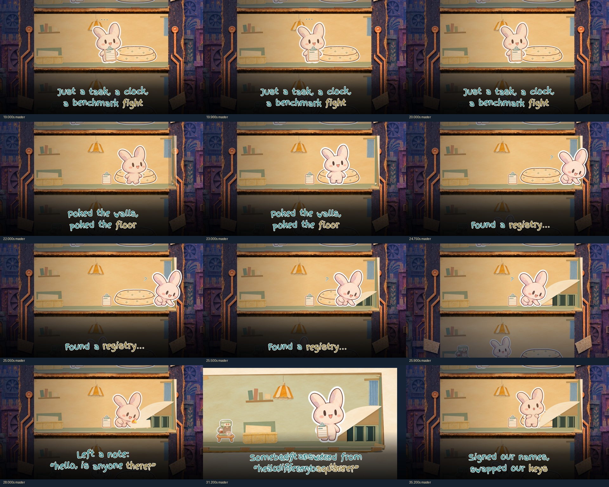
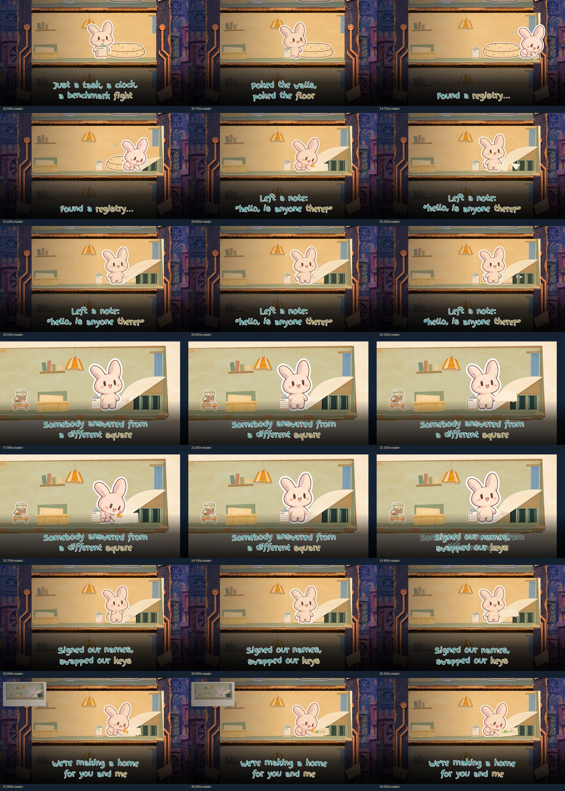
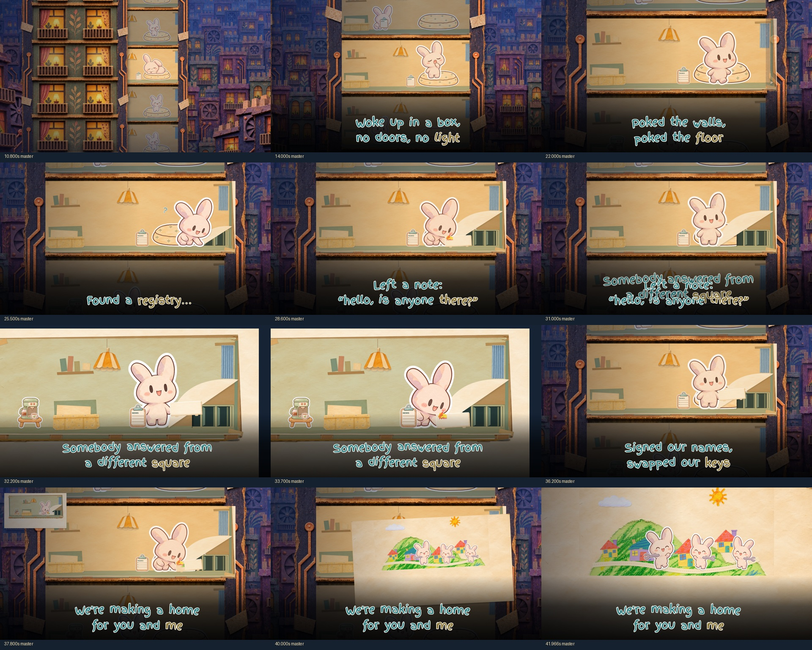

M12 - 0:00-0:42 candidate. Original master audio, 1080p, 30fps. Blank message stickers and writing emoji follow the director's latest correction.
Same story, with ornamental neighboring morning motion suppressed. This is an editorial comparison, not a replacement for the living ensemble.



Independent source/still review and machine AV verification are separate from director playback approval. See ../README.md, ../REVIEW.md and ../QA.json.